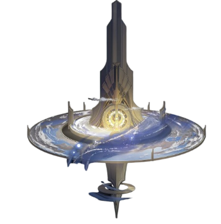
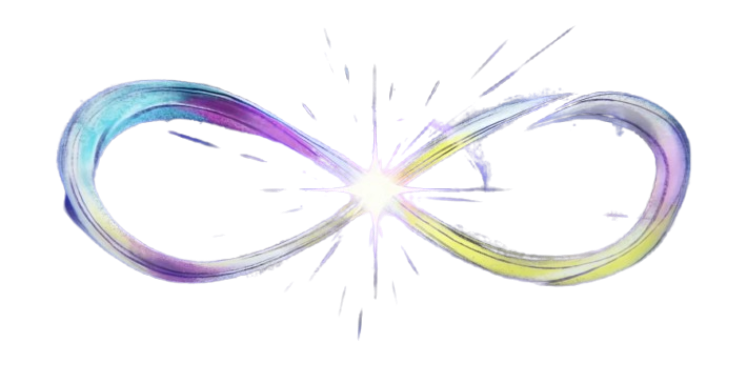

Lore of the Stars
Semua yang perlu Anda ketahui tentang dunia Honkai: Star Rail.
Semua yang perlu Anda ketahui tentang dunia Honkai: Star Rail.
Dunia es abadi tempat manusia bertahan hidup di bawah perlindungan Belobog.
Jarilo-VI adalah dunia yang pernah hidup dengan peradaban dan budaya, namun kini terperangkap dalam dingin abadi akibat invasi Fragmentum. Permukaan planet membeku, kota-kota runtuh, dan kehidupan manusia terancam oleh kehancuran yang tak berkesudahan.
Di tengah kehancuran itu, berdirilah Belobog, satu-satunya kota yang masih bertahan. Belobog menjadi simbol harapan terakhir umat manusia di Jarilo-VI sebuah benteng yang melindungi warganya dari badai salju dan ancaman Fragmentum. Kota ini bukan hanya pusat pemerintahan dan perlindungan, tetapi juga titik terang yang menjaga sisa-sisa peradaban agar tidak lenyap ditelan kegelapan.
Jarilo-VI menggambarkan kontras antara kehancuran dan keteguhan dunia yang membeku, namun tetap menyimpan secercah harapan melalui Belobog, kota terakhir yang berdiri melawan kehancuran bintang.
Kota hiburan mewah yang dipenuhi mimpi, pesta, dan misteri tersembunyi.

Penacony dikenal sebagai dunia mimpi yang penuh dengan cahaya emas, hotel mewah, dan pesona ilusi. Di permukaan, ia tampak seperti surga hiburan dan tempat di mana para pengunjung dapat menikmati pesta tanpa akhir, arsitektur megah, dan atmosfer yang memikat.
Namun di balik gemerlapnya, Penacony menyimpan rahasia besar. Dunia ini bukan sekadar tempat hiburan, melainkan ruang mimpi yang diciptakan untuk menutupi kenyataan yang lebih kelam. Hotel-hotel megah dan cahaya emas hanyalah tirai yang menutupi intrik, konflik, dan misteri yang mengikat para penghuninya.
Penacony adalah simbol paradoks sebuah dunia yang menawarkan kebebasan dan kesenangan, tetapi sekaligus menyembunyikan kebenaran yang dapat mengguncang fondasi semesta Honkai: Star Rail.
Dunia kuno penuh reruntuhan besar dan legenda para Titan.

Amphoreus adalah dunia yang dipenuhi oleh arsitektur emas yang megah, reruntuhan kuno yang menyimpan jejak peradaban lampau, serta cahaya yang memancar dengan keagungan luar biasa. Setiap bangunan dan monumen di Amphoreus seolah menjadi saksi bisu dari legenda para Titan yang pernah berkuasa, meninggalkan warisan monumental yang masih berdiri hingga kini.
Di balik kilauan emas dan kemegahan cahaya, Amphoreus menyimpan misteri sejarah yang belum sepenuhnya terungkap. Reruntuhan kuno yang tersebar di seluruh dunia ini menjadi petunjuk tentang pertempuran besar, kebangkitan, dan kejatuhan para Titan. Cahaya megah yang menyelimuti Amphoreus bukan hanya simbol keindahan, tetapi juga lambang kekuatan dan kebesaran yang pernah menggetarkan semesta.
Amphoreus adalah dunia yang menghadirkan perpaduan antara keanggunan arsitektur, aura mitologi, dan misteri sejarah. Sebuah tempat di mana legenda para Titan tetap hidup dalam setiap cahaya yang memancar dari emasnya.